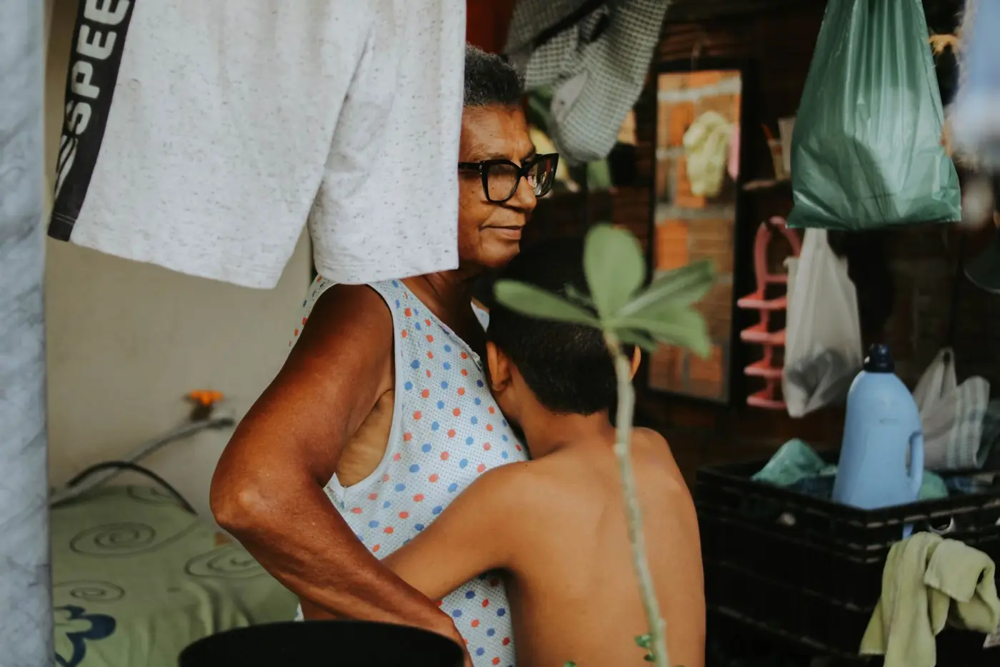

Dra. Helena Duarte Campos
OAB/MG 000.001 · EXEMPLO
Sócia. Advogada previdenciária, com especialização em Direito Previdenciário (EXEMPLO).
Atende: Aposentadorias, revisão e pensão por morte.
O escritório
A Alvorada atende só direito previdenciário. Nosso público são pessoas a partir de 55 anos e as famílias que cuidam delas.
Ouvir primeiro, explicar em palavras simples e dizer com franqueza o que pode e o que não pode ser feito.
Como atendemos
Nossos compromissos
Nada de juridiquês. Se uma palavra difícil aparecer, ela é explicada.
Nenhum advogado pode prometer resultado ou prazo. Dizemos o que é possível saber, e quando.
Cada etapa é avisada. Você não fica sem saber em que pé está.

Equipe EXEMPLO
Nomes e registros abaixo são ilustrativos, criados para esta demonstração.
OAB/MG 000.001 · EXEMPLO
Sócia. Advogada previdenciária, com especialização em Direito Previdenciário (EXEMPLO).
Atende: Aposentadorias, revisão e pensão por morte.
OAB/MG 000.002 · EXEMPLO
Advogado. Pós-graduação em Direito Previdenciário e Assistencial (EXEMPLO).
Atende: BPC/LOAS e benefícios por incapacidade.
OAB/MG 000.003 · EXEMPLO
Advogada. Atuação em trabalho rural e regime de economia familiar (EXEMPLO).
Atende: Aposentadoria rural e híbrida.
A equipe de atendimento ajuda a marcar a conversa, lembra o que trazer e tira dúvidas sobre o andamento por telefone ou WhatsApp.
As informações desta página são gerais e servem para você entender o assunto. Se você tem ou não direito, e qual o melhor caminho, só dá para saber depois de olhar os seus documentos. O escritório não promete resultado nem prazo.
Você ou alguém da família. Atendemos no escritório, por telefone ou vídeo.